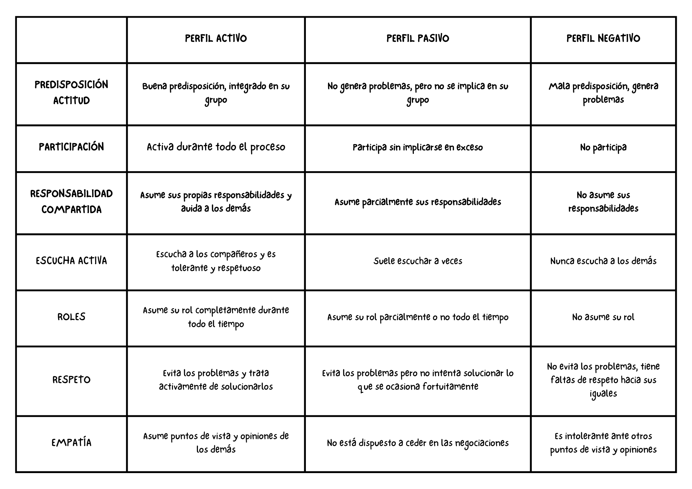
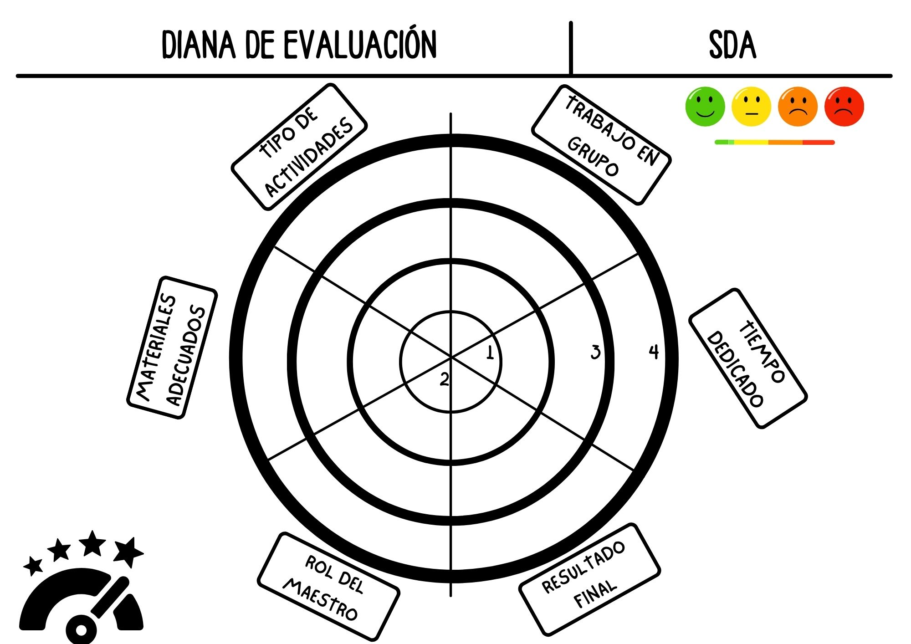

Vamos a evaluar el proyecto a través de evaluación formativa, ya que no buscamos una nota numérica, sino que nos basamos en la evaluación del proceso, buscando una mejora permanente.
La evaluación inicial se realiza a través de debates y la plataforma Padlet, donde recogeremos las ideas previas que posee el alumnado.
Realizaremos una evaluación procesual, iremos recogiendo datos durante todo el tiempo que dure el proyecto. Para ello, poseemos una rúbrica que podemos ver a continuación.
La rúbrica es una tabla de doble entrada en las que he consignado el tipo de respuesta que ha tenido el alumno o alumna ante la actual situación de aprendizaje. Se marcará de forma diaria, con cada actividad realizada, de forma que la media de todo lo registrado nos ayude a evaluar, junto a otros instrumentos.
Teniendo en cuenta que con estos aprendizajes se pretende que el alumnado sea tolerante con las diferencias individuales y aprenda a ser empático, se han valorado ítems relacionados con estos aspectos.
En la primera columna están los aspectos deseados que se pretende que alcance nuestro alumnado, en la columna central sería un aspecto intermedio, y en la última que no se ha alcanzado.

La evaluación final, se realiza para valorar el proyecto en sí, en si ha estado adaptado a la edad del alumnado, a sus intereses, si el tipo de actividades y el trabajo en grupo han sido adecuados, y también valorar el rol del docente. Se realizará a través de una diana de evaluación.
La diana de evaluación es un sistema de evaluación visual que usaré al finalizar la situación de aprendizaje. El propio alumnado evalúa los distintos aspectos del proceso de enseñanza-aprendizaje, lo cual nos ayuda a evaluar dicho proceso. De este modo, veremos los aciertos y los fallos de nuestra Situación de Aprendizaje, y ellos nos ayudará a que la siguiente sea más adaptada a los intereses de nuestro grupo-clase.
Los círculos están divididos por líneas y cada sector representa un aspecto a tener en cuenta en la evaluación. De dentro hacia fuera, se indica el nivel de cumplimiento de cada aspecto evaluado.
